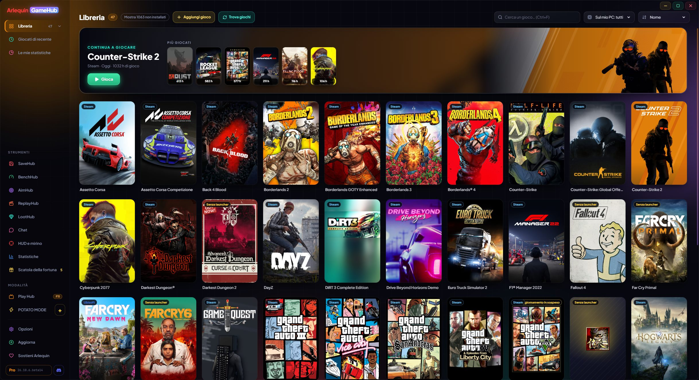

Tutta la tua libreria in un unico posto
Steam, Epic, GOG, Xbox, Ubisoft, EA, Battle.net, Amazon, Rockstar e giochi senza launcher, insieme.
GameHub guarda ciò che hai già sul PC: le cartelle e i file che conserva il launcher di ogni store. Così trova i giochi installati e anche quelli che possiedi ma non hai installato, con copertine e ore giocate. Le ore contano anche se apri il gioco dal suo launcher.
Nella barra laterale, cliccando su Libreria si aprono i tuoi store con quanti giochi hai in ciascuno (anche quelli con l’app installata ma ancora senza giochi). Puoi ordinare per nome, per ultima partita, per ore o per dimensione, cercare all’istante e vedere a cosa hai giocato di recente.
I giochi senza launcher (un emulatore, un gioco di itch.io…) si aggiungono con il pulsante «Aggiungi gioco», oppure dici a GameHub in quali cartelle sono i tuoi giochi sparsi e li trova da solo. Cerca la copertina ufficiale di Steam anche per i giochi di altri store, aggiunti a mano o rimossi dallo store; se non c’è, usa l’icona del gioco, e puoi sempre mettere una tua immagine.
Un gioco che hai in più store o nella stessa cartella compare una sola volta. E se Steam sta aggiornando un gioco, lo vedi sulla sua scheda («Aggiornamento 45%» o «Aggiornamento in sospeso»).
Nella beta, gli aggiornamenti di Steam e i download di Epic (installazione o aggiornamento) mostrano in basso nella scheda, dove di solito c’è «Gioca», la % reale, la velocità e il tempo rimanente; cliccando si apre Steam o Epic. Se un download si ferma, compare «In pausa».
Nella beta, nuovi store: Riot (League of Legends, VALORANT, TFT…), HoYoPlay (Genshin, Star Rail, Zenless…), Wargaming (World of Tanks…), Ankama (Dofus, Wakfu…) e Gameforge (Metin2, NosTale…), con le ore di ogni personaggio di Dofus. I giochi per console di GOG Galaxy (PlayStation, Nintendo) hanno la loro sezione e si possono nascondere, e in Opzioni → Libreria togli gli store che non vuoi e scegli il loro ordine nella barra laterale.
Se si infila qualcosa che non è un gioco (un programma, un server…), lo togli e GameHub impara. Puoi recuperarlo in Opzioni → Libreria.
Non chiede mai la password di nessuno store: per giocare apre ogni gioco con il suo launcher, come se l’avessi aperto tu.
I tuoi giochi Xbox / Microsoft Store e Ubisoft compaiono anche se non sono installati, e quelli del Game Pass si possono nascondere. Le saghe sono ordinate per data di uscita, e copertine e sfondi sono salvati sul tuo PC: compaiono subito, anche offline.
Come si usa
- Aprilo e aspetta qualche secondo: i tuoi giochi compaiono da soli.
- Doppio clic o il pulsante «Gioca» (sotto la copertina) per aprire un gioco.
- «Mostra N non installati» mostra anche quelli che non hai installato.
- «Trova giochi» ricontrolla subito i tuoi store.
- Nella beta, i personaggi di Dofus vanno per server: alla chiusura del gioco GameHub deduce su quale giocavi o te lo chiede, le schede sono raggruppate per server e puoi spostare ore su un altro server.

Lo provi?
⬇ Download diretto 🛍️ Scarica dal Microsoft StoreWindows 10 e 11 (64 bit) · Gratis · Si aggiorna da solo